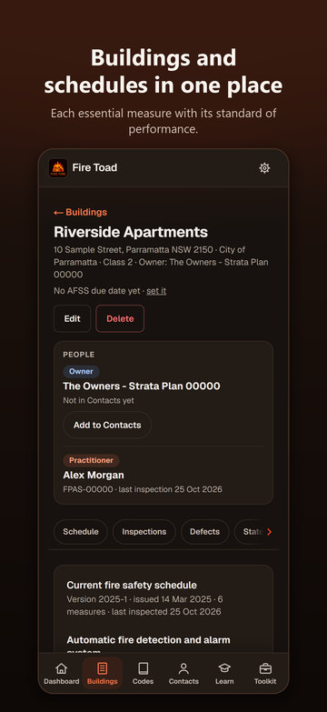
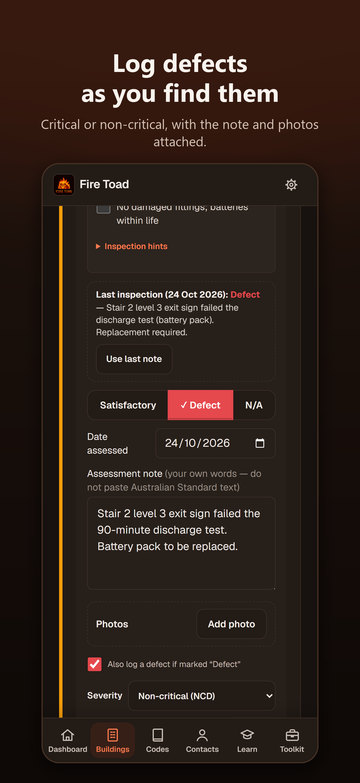
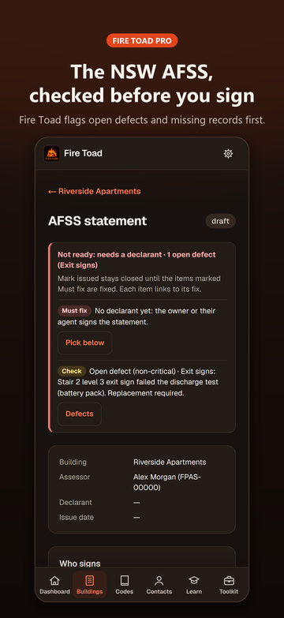
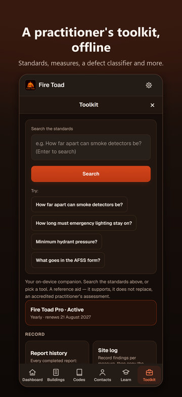

Everything Fire Toad does
Every feature of Fire Toad 1.3 on iPhone, in the order you'd use them on a job. Untagged features are free for everyone, always.
- First 3 free your first 3 reports include it, then it needs Fire Toad Pro
- Pro needs Fire Toad Pro
Getting started 6
No sign-up. Fire Toad opens on the Dashboard with five steps to set you up.
- No sign-up
Fire Toad opens straight to the Dashboard. There is no account, login or email step.
- Getting started checklist
Five numbered steps on the Dashboard (your profile, your signature, your company, your first building, your first site inspection), each linking to its screen and ticking off when done.
- Profile prompt
Until your name and accreditation are saved, a Dashboard card asks for them and links to Settings.
- Moving from another phone
A Dashboard shortcut opens Backup & restore so you can bring everything across from a backup file.
- Practice mode
Learn loads a sample building with a schedule and measures so you can try the whole flow, then removes it again without touching your own records.
- How Fire Toad works
A six-step tour in Learn, from your profile to the report and the AFSS, with a link to each screen.
Buildings and schedules 19
Set up each building and its fire safety schedule once, ticking measures from a list instead of typing them.
- Add a building
Records the name, address, local council, one or more BCA classes (1a to 9c, several at once for mixed-use buildings), the owner or owners corporation, and the AFSS due date.
- Buildings list
Shows each building's class, address and counts of schedules, defects and statements, with a status line: last inspected, open defects, and AFSS due or overdue.
- Search and sort buildings
Search by name, address or owner once you have more than 3 buildings; sort by name, most recently inspected or AFSS due soonest, and the app remembers your choice.
- Edit or delete a building
Every field can be edited. Delete asks first, then removes the building with its schedules, inspections, defects, statements and documents.
- AFSS due countdown
The building header shows the AFSS due date and the days left or overdue, with a link to change it.
- People panel
Shows the building's owner and the practitioner of its latest inspection with Call and Email buttons, and offers to add the owner to Contacts with the details filled in.
- Section chips
A swipeable row on the building jumps to Schedule, Inspections, Defects, Statements, Logbook and Documents.
- Fire safety schedule versions
Add a schedule with its version and issue date and make it the current one; the card shows how many measures it has and when it was last inspected.
- Add measures sheet
Tick several measures at once from a list of 30 (common ones first, then by category); each comes with its standard of performance and AS 1851 service frequency filled in.
- Site-word filter
Type the words used on site, such as sprinkler, FIP, EWIS or exit light, to filter the Add measures list.
- Edition and criticality
For each ticked measure, pick the edition of its standard (for example AS 2118.1-2017, -1999 or -1995) and mark it Essential or Critical.
- No double-ups
Measures already on the schedule are listed separately, and a duplicate custom measure is refused.
- Custom measure
Adds a measure that isn't on the list, with its name and standard of performance worded the way the schedule words them.
- Add or edit a measure by hand
A form with a measure picker, your own wording of the standard of performance, a standard picker (standards by edition, BCA parts or Performance Solution), referenced standards, criticality and SFSS interval.
- Measures on the schedule
Each measure shows its criticality, standard of performance, standards, AS 1851 service frequency and a details link, with Edit and Remove.
- Critical measures and SFSS dates
Give a critical measure an interval in months and its next supplementary statement date appears in What's due.
- Documents
Stores files against the building, tagged as schedule, certificate or other, to open or delete later.
- AS 1851 logbook
A servicing log for each building: date, measure, activity, result and who performed it.
- Logbook CSV export
Exports a building's logbook as a CSV file for a spreadsheet.

Site inspections 17
A guided walk through every measure on the current schedule, built so nothing is marked by accident or lost on site.
- Guided site inspection
Walks through every measure on the building's current schedule, with a progress line and bar showing how many measures are recorded and how many are defects or N/A.
- Inspections in progress
The Dashboard lists unfinished inspections with how many measures are recorded and a Resume button.
- Per-measure checklist
Tick what you verified for each measure, with a live count; the ticked items print on the report as verified.
- Inspection hints
Collapsible guidance for each measure: how to test it, common defects, where it is usually found and what to record.
- Last inspection's notes
Shows each measure's result and note from the building's previous completed inspection; Use last note copies the note in for you to edit.
- Satisfactory, Defect or N/A
Records a result for each measure with its own date assessed and a note in your own words. Nothing is pre-selected, so a measure is never marked Satisfactory by accident.
- N/A needs a reason
Choosing N/A asks for a reason before the measure can be saved, and the reason prints on the report.
- Defects logged on the spot
Marking a measure Defect logs a defect (untick to skip it) with a severity, Critical (CD) or Non-critical (NCD), starting at Critical for measures the schedule marks critical. The defect takes the card's comment and photos.
- Photos per measure
Add several photos from the camera or library, view them full screen or remove them; they are saved with the inspection and appear on the report.
- Unsaved changes marker
A measure card shows Unsaved changes until you press Save.
- Nothing lost on site
Unsaved ticks, results, severities, dates and notes come back if the app is closed or reloaded, marked Not saved yet.
- Leave and complete guards
Leaving with unsaved changes offers Save and leave, Leave without saving or Stay; Complete inspection offers Save and complete or Review changes.
- Add a measure on site
Adds a measure you find on site to the building's current schedule; it joins the inspection, ready to assess.
- Paths of travel record (§5)
Records the paths of travel inspection: parts inspected, dates, APFS name, result and notes. It prints on the report.
- Complete inspection
Lists any measures still without a result, picks the practitioner (from your profile, or your only practitioner contact) and accreditation number, takes closing notes and produces the report.
- Quick assessment record
Records an assessment without the guided inspection: date, practitioner, accreditation and notes.
- Abandon or delete an inspection
Both ask first, then remove the inspection's recorded results.

Defects 5
Log defects as you find them and keep the history once they are fixed.
- Open defects register
Every open defect across all buildings, critical first, with photos, the measure and a link to the building. The Dashboard shows the count.
- Log a defect by hand
Records a description, a severity (Critical, Non-critical or Observation), the measure, the related inspection and photos.
- Mark rectified
Records the rectification date, who rectified it and a note on what was done.
- Rectification history
Rectified defects stay on the building with 'Rectified <date> by <name>' and can be reopened or deleted.
- Current status on reports
A report's defects show their status now, so a defect rectified after the report was sent shows as Rectified.

Reports 20
Completing an inspection produces the Fire Safety Assessment Report. Sending it is part of Pro, and your first 3 reports include it.
- Fire Safety Assessment Report
Completing an inspection produces the report, which you can open any time from Report history or the building.
- Report reference number
Each report gets a reference such as FT-2026-0001, or your company's initials when it goes out under your company (AFS-2026-0001 for Acme Fire Safety). It appears on the report, in the PDF and in the file name.
- Details panel
Building, address, BCA class, owner (with phone and email when on file), the assessing practitioner and accreditation, dates assessed and completed, the reference and the report status.
- Summary of results
Counts of measures assessed, satisfactory, defects and not applicable, with a one-line summary of open defects.
- Measures assessed
Each measure's standard, result, comment, verified checklist items, photos and date assessed: cards on the phone, a table in the PDF.
- Defects identified
Each defect's severity, measure, description, photos and status (Open or Rectified).
- Measures as completed
A report keeps the measure list it was completed with: measures added to the schedule later stay off it, and measures removed later still show as they were.
- Practitioner kept with the report
A completed report keeps the practitioner's name and accreditation number even if that contact is removed later.
- Practitioner sign-off
Ends with Assessed by, Signature and Date, then one sentence saying what the document is, who assessed the building and when, and that it is not the Annual Fire Safety Statement.
- Signature and date on the sign-offFirst 3 free
Your saved signature (when it was saved under the report's practitioner's name) and the completion date go on reports you can send.
- Print-ready layout
White A4 pages that keep rows and blocks whole and repeat table headers, with coloured result dots and a boxed details panel.
- Photo viewer
Tap a photo to open it full screen, then pinch, double-tap or tap Zoom to look closer.
- Share PDFFirst 3 free
Turns the report into an A4 PDF named after its reference, building and date, and opens the iPhone share sheet.
- Email reportFirst 3 free
Opens Mail with the PDF attached, the subject and message filled in, and the owner's email in To when it is on file. It appears only when the iPhone has Mail set up, and uses the share sheet if Mail won't open.
- Print / Save as PDFFirst 3 free
Sends the report to the iPhone print dialog with proper page margins.
- PDF page footersFirst 3 free
Every page of a shared or emailed PDF carries the reference and building on the left and Page X of Y on the right.
- Company letterheadFirst 3 free
A dropdown above each report chooses which of your companies heads it, or Fire Toad; each report remembers its pick and new reports start with the last one.
- Letterhead kept as sentFirst 3 free
Once a report has been shared, emailed or printed it keeps the company and sign-off it went out with; edit the report to change them for the amended version.
- Edit a completed report
Reopens a completed report to change results, comments, photos, the §5 record, the practitioner and notes, with Go to Complete and Discard changes, which puts it back exactly as it was.
- Amended reports
A report completed again gets a suffix on its reference (-A1, -A2), an 'Amended report, first completed <date>' line and status, and an Amended chip in Report history.

NSW AFSS and statements 8
For NSW buildings: check what stands in the way, then fill the official form.
- Generate AFSS statement
From a report, starts the building's AFSS draft, or opens the draft it already has.
- New statement
Creates an annual (AFSS) or supplementary (SFSS) statement draft. The assessor (you, or your only practitioner) and the owner as declarant are picked for you, with Add me and Add the owner shortcuts, and the declarant can't be the assessor.
- Who signs
Change the declarant (owner or their agent) and the assessor on a draft, or delete the draft without touching anything else.
- Readiness check
Lists what stands in the way of issuing (the people, the schedule, a completed inspection, missing results, open defects, missing N/A reasons, the §5 record, assessments over 3 months old, the owner's details), each linked to its fix, or shows Draft, ready to issue.
- Official NSW form as a Word documentFirst 3 free
Fills the official NSW fire safety statement form (annual or supplementary) as a Word (.docx) document, otherwise unaltered, ready to check and sign.
- Fill-by-hand reminder
Lists what the form leaves for you to complete: the building description in Section 2 and the owner or agent tick in Section 8.
- Issue safeguards
Warns before you generate the document or mark the statement issued while items are open, and asks for a deliberate 'anyway' (a document generated then is a draft to check). It won't mark a statement issued while a must-fix item remains, such as an open critical defect or a measure with no result.
- Mark issued and lodged
Records the issue date and rolls the building's AFSS due date forward, then records that you have lodged the statement with the council and Fire and Rescue NSW.

Due dates and history 4
What is due next, and every report you have completed.
- What's due
Lists upcoming AFSS due dates, and SFSS dates for critical measures, with a days-left countdown; anything due within 30 days is highlighted, each links to its building, and Done clears an item. The list refreshes itself once a day.
- AFSS due dates roll forward
Issuing a statement moves the building's AFSS due date on to the next cycle, so What's due and the building header stay current.
- Share due reminders
Shares a plain-text list of the deadlines due in the next 30 days through the iPhone share sheet.
- Report history
Lists every completed report, newest first, with building, address, completion date, practitioner, measure and defect counts, company and an Amended chip; shows 5 with Show all, adds a search box once there are more than 5, and has Open report and Edit on each. Also reachable from the Toolkit.
Your company and contacts 9
Your profile, your companies and the people you deal with, set up once.
- Practitioner profile
Your business name, your name as APFS, accreditation number and email, used as the defaults on your reports and kept as your practitioner contact.
- Signature
Sign once with your finger in Settings; Clear to sign again.
- Companies
Save every company you work under (name, ABN, licence or accreditation, phone, email, website, address and logo) and choose the default for new reports. A company shows on a report as its letterhead (see Company letterhead).
- Company on the Site log summaryPro
Puts the default company's name, logo and details on the Toolkit's Site log summary and its copied text.
- Contacts
Practitioners (with accreditation number), owners and strata managers, with phone and email, used on reports and statements.
- Call and Email
One tap opens Phone or Mail from Contacts, the building's People panel and the report screen.
- Edit or remove a contact
Change a contact's phone and email, or remove the contact.
- No duplicate contacts
Adding someone already in Contacts fills in their missing phone, email or accreditation instead of adding a second copy.
- Owner details on the report
The owner's (or strata manager's) phone and email print under Owner when they are on file.
Practitioner Toolkit 18
An offline reference: summaries with clause numbers, never the text of the standards.
- Toolkit tab
12 tools grouped into Record, Reference and Setup, with the standards search at the top and your Pro status.
- Search the standards
Ask a question in plain English and get an answer offline from a built-in, rules-based reference (no AI): paraphrased requirements, clause numbers, a confidence label, how the answer was matched and a link to the measure. Example questions are there to tap.
- Copy and Listen
Copy an answer with its citations, or have it read aloud.
- Measures directory
All 28 essential measures by category with a filter; each opens to its summary, AS 1851 service frequency and standards, with buttons to search, add it to a checklist, log a finding or classify a defect.
- What the standards say
For measures the reference covers, the clause citations: standard, edition, clause number, title and a plain-language summary of what it requires.
- My reference
A private note on each measure for your own wording from your licensed copy of a standard. It stays on your phone.
- Measure hints
What to check, how to test, common defects, access tips and record-keeping for each measure.
- Site log
Quick findings per measure (Satisfactory, Defect or N/A, defect chips, CD or NCD, a one-line note), a site name and general notes, then a short on-screen summary you can copy as text.
- Common notes
Pick from 14 standard field notes instead of typing them.
- Inspection checklist builder
Builds a tickable field checklist from the measures you choose; copy it or clear it.
- AFSS readiness
A tick-as-you-go checklist of the NSW annual statement process: timing, critical versus essential measures, lodgement and key dates.
- Defect classifier
Explains critical versus non-critical defects and lists common defects for a chosen measure to look up.
- Building classes
NCC Classes 2 to 9, each with its fire-safety focus and typical measures you can tap through to.
- Glossary
12 terms, including AFSS, APFS, FRL, FIP, DTS and SOU, with a filter.
- Codes & standards
Short summaries of NCC 2022, the BCA, AS 1851-2012, the AS 1670 series, the AS/NZS 2293 series and the EP&A Regulation 2021, plus construction types A, B and C.
- Shortcuts
Toolkit tiles for Report history, Companies and Backup & restore.
- Codes tab
Searchable cards for the 28 measures with their standards, AS 1851 section and frequency and a confidence label, each expanding to NCC references, what to check, how to test, common defects, typical location and what to record. Also building classes, construction types and the code frameworks, with links to official sources.
- Measure quiz
Ten questions on service frequencies, standards, categories and routine checks, with instant feedback, a score and a review of the ones you missed. In Learn, and in the Toolkit as Train & quiz.

Privacy, offline and backups 9
Everything lives on your iPhone. A backup is a file you save yourself.
- Works offline
The whole app is built into the iPhone app, so buildings, inspections, photos, reports and the standards search all work with no signal.
- No account
There is no sign-up and no login.
- Data stays on your phone
No server, no cloud copy, no analytics and no advertising. Nothing leaves the phone unless you share it.
- Back up now
Saves everything (buildings, inspections, reports, photos, documents, companies, signature and settings) as one dated file to Files, Mail or AirDrop; the backup only counts once the file has actually been saved or sent.
- Last backup shown
Settings and the Toolkit show when you last backed up.
- Backup reminder
Once you have a building and haven't backed up for 30 days, a Dashboard card offers Back up now or Later (which hides it for 7 days).
- Restore
Pick a backup file, confirm its date and record count, and it replaces everything on the phone in one step.
- Delete all data on this phone
Offers a backup first, then asks you to type DELETE before erasing every building, inspection, report, photo, company, signature and setting.
- Privacy, terms and support
Settings links to the privacy policy, Apple's standard Terms of Use, the support website and support email, and shows the app version.
iPhone conveniences 9
Fire Toad follows your iPhone's settings and uses its share sheet, Mail, camera and print.
- Text size
Follows the iPhone's Text Size setting (from 90% to 135%) and layouts reflow to fit; reports and PDFs keep a fixed size.
- Dark, Light or System
Dark by default; choose Light or System in Settings > Appearance. Reports always show as white paper.
- Share sheet, Mail and print
Reports go out through the iPhone share sheet, Mail and print (see Reports for the First 3 free tags). Backups, logbook CSVs and your own documents always share freely.
- Camera and photo library
Add photos straight from the camera or the photo library.
- Phone, Mail and links
Call and Email buttons open the iPhone's Phone and Mail apps, and links to official websites open in your browser.
- Bottom tab bar
Dashboard, Buildings, Codes, Contacts, Learn and Toolkit, with Settings in the top bar; swipe back to go back.
- VoiceOver
Controls and photos are labelled, sheets are announced as dialogs, and focus moves to each sheet and back when it closes.
- Tap targets and contrast
Controls are at least 44 points almost everywhere, and text meets WCAG AA contrast in light and dark.
- Reduce Motion
Slides and fades are turned off when Reduce Motion is on.
Fire Toad Pro and pricing 18
Free to download. Pro adds sending reports, the NSW statement document and your branding.
- Free download
Fire Toad is free to download. Buildings, schedules, inspections, photos, defects, report history, backups and the Toolkit are always free.
- What Pro adds
Sharing, emailing and printing the report PDF; the NSW AFSS Word document from the official form; and your company branding on reports (plus the Site log summary).
- First 3 reports include ProFirst 3 free
Every user's first 3 reports include sharing, emailing, printing, company branding and the statement document. A report uses a free slot the first time it is shared, emailed or printed, drafts never use one, and the building's statement document rides on its report's slot.
- Free count can't be reset
The free reports used are kept in the iPhone Keychain, so reinstalling the app or restoring a backup doesn't reset them.
- Free corrections within 30 daysFirst 3 free
Fixing a free report and completing it again within 30 days of first completing it doesn't use another free report.
- Free reports note
Each report says how many free reports are left, or that it is one of your free reports.
- Locked preview
After the 3 free reports, reports stay complete and readable on screen, with PRO badges on the export buttons, the Fire Toad emblem in place of your company, a PREVIEW, FIRE TOAD PRO watermark, and text that can't be selected or copied.
- Pro prompt with a reason
Tapping a locked Share PDF, Email report, Print or statement button opens the Pro screen and says why.
- Fire Toad Pro Monthly
A$19.99 a month, an auto-renewing subscription.
- Fire Toad Pro Yearly
A$149.99 a year, an auto-renewing subscription; saves 37% on 12 months of Monthly.
- Same features on both plans
Monthly and Yearly unlock exactly the same features. Nothing else is sold: no lifetime or one-off purchase.
- Pro screen
Lists what Pro adds, the free allowance, Yearly and Monthly with prices from the App Store, Restore purchases, the renewal terms, and the Terms of Use and Privacy Policy links.
- Restore purchases
Restores either plan and says whether Pro is active, wasn't found, or the App Store couldn't be reached.
- Plan status and Manage subscriptionPro
Subscribers see Fire Toad Pro is active, their plan and renewal date, and Manage subscription to switch plans or cancel in Apple's settings.
- Pro status in Settings and the Toolkit
A Settings card and a Toolkit tile show the free reports left or the active plan.
- Pro works offlinePro
Your subscription is remembered, so Pro opens unlocked on site with no signal; a renewal that hasn't reached the phone yet gets 3 days' grace.
- Founding customers keep ProPro
Anyone who bought Fire Toad before 1.3 (version 1.2.0 or earlier) keeps Pro for good at no extra cost.
- Offer codes
Offer codes are redeemed in the App Store, by redeem link or Redeem Gift Card or Code, not in the app, and arrive as an ordinary Yearly subscription.
What Fire Toad doesn't do 20
Things people sometimes assume. Better to know before you start.
- No cloud sync
Records live on one iPhone. There is no sync between phones; you move everything with a backup file.
- No automatic or cloud backup
A backup is a file you save yourself (Files, Mail, AirDrop). Deleting the app deletes your records.
- No team accounts
No shared workspaces, office dashboard, user roles or web version. Each practitioner's phone is separate.
- NSW-focused
The statement workflow, the readiness checks and the Word document are for the NSW AFSS and SFSS only. There are no other states' statements or forms.
- No Android app in a store
Fire Toad 1.3 is an iPhone app on the App Store, in portrait. There is no Google Play version, no iPad layout and no Apple Watch app.
- No lodgement
Fire Toad doesn't lodge statements with the council or Fire and Rescue NSW. You lodge them yourself and record the date.
- No e-signing of statements
The Word document leaves parts to complete by hand (Section 2, the Section 8 tick) and is signed outside the app. Owners don't sign in the app.
- Not the text of the standards
The Toolkit gives summaries in its own words with clause numbers, never the text of Australian Standards, the NCC or legislation. Verify against your own licensed copies.
- No AI
The standards search is a fixed, rules-based reference, not AI or a chatbot.
- Not compliance advice
Fire Toad is a record-keeping and reference tool. It supports the practitioner's assessment and doesn't replace it, and the assessment report is not the AFSS.
- No notifications
What's due lives inside the app. There are no push reminders and no calendar sync (Share due reminders sends a text list).
- No video
Photos only.
- No import
There is no import from other software or spreadsheets. Exports are the report PDF, the statement document, the logbook CSV and the backup file.
- No business admin
No quoting, invoicing, job scheduling, client portal or time tracking.
- No offer code entry in the app
Offer codes are redeemed in the App Store.
- No lifetime purchase, free trial or Family Sharing
Pro is Monthly or Yearly only. The 3 free reports take the place of a trial.
- No in-app text size control
Text follows the iPhone's Text Size setting, up to 135%.
- Schedule versions start empty
A new schedule version doesn't copy the measures from the previous one.
- Buying needs a connection
Pro keeps working offline, but subscribing or restoring needs a connection to the App Store.
- English only
No other languages.
Try it on a real job
Fire Toad is free to download, and your first 3 reports include sharing, emailing, printing, your company branding and the NSW statement document. Recording inspections is always free.
Fire Toad is a record-keeping and reference tool. It supports the practitioner's assessment and doesn't replace it, and its assessment report is not the annual fire safety statement. Standards are cited by clause number with plain-language summaries, never reproduced. Fire Toad is not affiliated with the NSW Government, Fire and Rescue NSW or Standards Australia. Screenshots show fictional demo data.